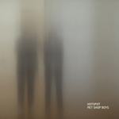

Quick Takes (January 2020)
Hello, and welcome to our first Quick Takes of the 21st Century!
Old meets new with this first crop of the year. While Mark had positive things to say about two brand new projects, I was fairly split on two new albums by longstanding veterans Pet Shop Boys and The Innocence Mission (If you've never heard any of their albums, I strongly suggest you do). Meanwhile, Kirk was rightfully critical about this month's cover artist Wolf Parade—which we both seem to agree didn't live up to their previous efforts.
What were your favorite albums during the month of January? Anything we didn't get to review that we should've? You can always reach us on Facebook, or on our official Twitter page. Juan
...
 Alice Boman
Alice Boman
Dream On
(PIAS Group)
Swedish songwriter Alice Boman brings a maudlin mood on her full-length debut, Dream On. The low key piano and synth melodies on display find a rare pathos: A spot that exits somewhere between Cat Power’s The Greatest and Tom Waits’ Tom Traubert’s Blues, and that’s a damn sad place to be. You only need to read through the song titles to get a sense of it all, but the carefully constructed builds of tracks like Wish We Had More Time and This Is Where It Ends make spending time with sorrow hard to resist. If the burbling dance beats of Don’t Forget provide a moment of respite, it’s the low energy pulse of songs like Who Knows and Everybody Hurts that will lay you bare. Boman’s softly accented vocals add an air of innocence to the proceedings, making the resignation of lines like “Is she everything that I am not” sting all the more. Dream On is custom-tailored for the days where it seems the happy ending just wasn’t meant for you. [8/10] Mark Moody
 Bonny Light Horseman
Bonny Light Horseman
Bonny Light Horseman
(37D03D)
Every decade or so, a group assembles themselves around the idea of bringing back a treasure trove of forgotten folk songs to a new audience. Post-2000, the group that immediately comes to mind is the dearly departed Ollabelle, whose three studio albums are well worth seeking out. A new decade brings us Bonny Light Horseman, which is comprised of Anaïs Mitchell (Grammy winner for Hadestown), Eric D. Johnson (leader of the Fruitbats), and Josh Kaufman (collaborator extraordinaire). Mitchell and Johnson trade vocal lead with Kaufman weaving much of the cloth that envelops these songs. The title song trifecta of the same-named group, album, and song leads things off with Mitchell quick off the post. The following two tracks, the Johnson-led Deep In Love and Mitchell-led The Roving, are just as sublime. The flow of the album is marred a bit by the clunky arrangement of Jane Jane, borrowing from the Peter, Paul and Mary arrangement—and finds Mitchell and Johnson at cross purposes. The rest of the center of the album suffers from just being average in the hands of a trio that delivered perfection at the open. Fortunately, the closing four tracks are just as magical as the beginning. That includes an appearance from Justin Vernon (whose label released the album) on the Ollabelle-ish Bright Morning Stars. Hard to call this a debut in the hands of such accomplished musicians, but the sublime far outweighs the average here and gives hope for further chapters. [7/10] Mark Moody
 The Big Moon
The Big Moon
Walking Like We Do
(Fiction Records/Universal)
In Walking Like We Do, The Big Moon face a difficult conundrum that's far too common in our current times—how do we deal when there's so much social, political, and environmental turmoil around us. The Juliette Jackson-led quartet's second album doesn't intend to answer those questions, rather tapping into the much-needed escapism that we all crave. Most of their sentiments range from pointed (Dog Eat Dog) to heavy-handed (A Hundred Ways to Land), striving to create anthems that connect over glistening production values. The sumptuous Your Light, is the highlight here, on which they choose to stand firm as they fend off the darkness over call-and-response harmonies and bright, chugging rhythms. It's a heavy theme to handle, but thankfully (or perhaps to its chagrin), most of these topics go unnoticed if you submit to its simple guitar-pop pleasures. [7/10] Juan Edgardo Rodríguez
 The Innocence Mission
The Innocence Mission
See You Tomorrow
(Thérèse Records)
Sometimes it's easy to take for granted the influence of chamber-folk veterans The Innocence Mission. For over 30 years, the husband and wife songwriting duo of Karen and Don Peris alongside bassist Mike Bitts have released a string of tender, yet intricate music that lives in a place of quiet contemplation. Led by Karen's otherworldly vocals, there's no shortage of beauty in their songs—always beautiful and comfortable but also in a period of stasis. Which is why it's surprising to hear that the band takes some chances on their twelfth album, See You Tomorrow. Songs like St. Francis and the Future and "We Don't Know How to Say Why introduce subtle touches of organ and mellotron over their fingerpicked arrangements, while the psych-tinged Mary Margaret in Mid-Air patiently unravels like a spool of celluloid. Centered around their view of how we all connect, there's a familiarity in how the trio naturally links themes of nature and spirituality around the human condition—but it's the first time in quite some time where it feels like they're genuinely reaching beyond their loyal fanbase. [8/10] Juan Edgardo Rodríguez
Pet Shop Boys
Hotspot
(X2 Recordings Ltd)
Pet Shop Boys were poised for a comeback once they parted ways with Parlophone in 2012. It allowed Neil Tennant and Chris Lowe to take on a new direction, by which they did—bringing in mega-producer Stuart Price to work with them on a trilogy of albums that pointed to that change rather than being linked to some overarching concept. And on Hotspot, their latest, the duo remain steadfast to that commitment with creamy, dancefloor-ready techno (Happy People, Will-o-the-wisp)—joyously documenting the anticipation before a night out. But there's also a somber, mellower tone which reflects their more experienced selves, putting forth soppy romantic ballads (You are the one), hypnotic declarations of fidelity (Only in the Dark), and corny, unsexy celebrations of marriage (Wedding in Berlin) that spoil the euphoria. Dreamland, which features young British synth-pop trio Years & Years, sounds like a 90s club jam that should've stayed in the past—even if the feature is an apt passing of the torch. [6/10] Juan Edgardo Rodríguez
 Wolf Parade
Wolf Parade
Thin Mind
(Sub Pop)
The first few tracks on Wolf Parade's latest, Thin Mind, bring to mind Arcade Fire's transition from anthemic Canadian indie darlings to nu-disco weirdos and titans of bland, garish pop. Like Arcade Fire, Wolf Parade has lost a spark. They were once strange, unpredictable, and brash; lyrics were abstract, yet evocative: “I was a dream-catcher hanging in the window of a minivan!” As for their current iteration, Wolf Parade have become, dare I say, generic? After losing a key member of their band (Dante DeCaro’s still alive, don't worry) the remaining members (Spencer Krug, Dan Boeckner, and Arlen Thompson) played into one of the oldest cliches in rock by retreating to a barn in the woods to record a sequence of songs addressing the modern age. Predictably, a song mentions the Anthropocene, which every musician and their uncle have recently discovered—just ask Grimes. The lyrics, like the trio's over-familiar vintage keyboards and melodic guitars, feel mailed in. On the other hand, the middle of Thin Mind hits a refreshing apex, starting with the fourth track, Out of Control, in which Krug channels his old compadres, Frog Eyes, thrashing out interesting chords, tempo changes, and some bombastic, yet convincing preaching about “losing the race.” That old suggestive about wedding gifts (something old, something new, borrowed, blue) is an apt way of describing Thin Mind. And like weddings, there might be some speechifying and predictability, but the dancing's still fun. [6/10] Kirk Sever
13 February, 2020 - 00:13 — No Ripcord Staff